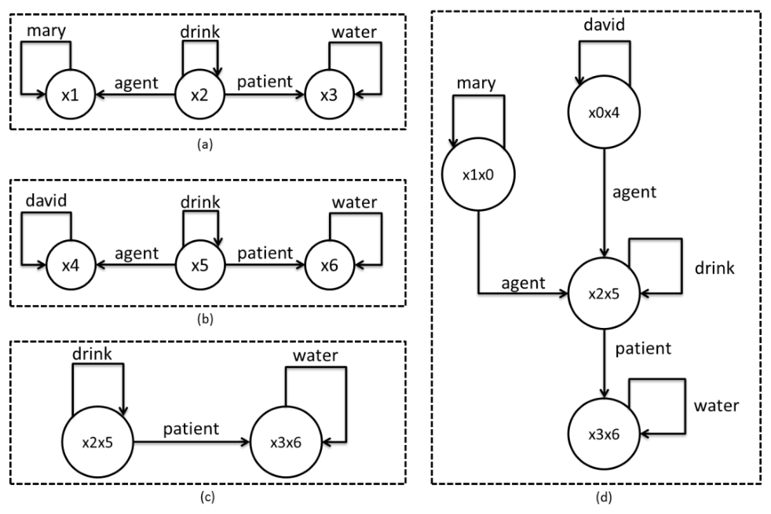

Judging how close a paragraph is to a sentence by comparing meaning graphs
SemEval is a series of shared tasks in which research groups attack the same language problem and are scored on the same data. In 2014 one task asked how similar in meaning a smaller piece of text is to a larger one. Our entry, JU-Evora, turned both texts into graphs, measured the distance between the graphs and learned to convert that distance into a score.
The task
The organisers gave four kinds of pairs: a paragraph with a sentence, a sentence with a phrase, a phrase with a word, and a word with one specific sense of a word. For each pair a system had to give a score from 0 to 4. A 0 means no similarity in concept, and a 4 means complete similarity in concept. A good sentence for a paragraph would reflect the paragraph's overall meaning.
How the system works
Each text goes through the C&C parser and Boxer, which write out its meaning as a discourse representation structure. That structure lists the things mentioned and the relations between them. We converted it into a graph: things become nodes, relations become edges, and a property of a single thing becomes a loop on its node.
Boxer may name the same thing more than once, so we first merge those names into one node. Special relations such as propositions and implications become labels on edges, and so do the agent and patient of an event. A fact about a single thing, for example that it is male, becomes a loop on its node.

To compare two graphs we used five distance formulas. They are built from the maximum common subgraph, the largest structure that both graphs contain, and the minimum common supergraph, the two graphs merged. The first formula, for example, is one minus the size of the common subgraph divided by the size of the larger graph, so two identical graphs are at distance 0. Two of the formulas were rescaled so that every distance lies between 0 and 1. Finding the exact common subgraph is NP-hard, which means it quickly becomes too slow. We used a faster approximation in which the node pairs with the most matching loops go in first.
Labels did not have to match letter for letter. We used WordNet, a large dictionary of word relations, and Wu and Palmer's measure. It calls two words close when their most specific shared ancestor sits deep in the dictionary's tree of concepts.
Each pair of texts therefore got five similarity scores. A k-nearest-neighbour model, trained on the gold-standard scores from the organisers, turned them into the final 0 to 4 score. The model looks for the training pairs whose scores are most alike and takes its answer from them. We chose k, the number of neighbours, by cross-validation, which means testing several values on held-out parts of the training data.
Words and phrases
A single word has no sentence structure to parse, so for the two smallest levels we looked up each word in WordNet and used its definition instead. When a word has several definitions, we joined them into one sentence with the word "or" and built the graph from that.
How it did
The paper says the system performed fairly. Its correlation scores are not as good as those of the baseline, listed there as LCS, except for a better Pearson correlation at the paragraph-to-sentence level. The other scores are in the vicinity of the baseline.
Correlation measures how well our scores rise and fall with the human ratings: 1 would be a perfect match and 0 no relation. Pearson compares the scores themselves, Spearman compares only their rankings. Table 1 gives both for our system and for the organisers' baseline, listed there as LCS, at each of the four levels.
| Measure | System | Paragraph to sentence | Sentence to phrase | Phrase to word | Word to sense |
|---|---|---|---|---|---|
| Pearson | JU-Evora | 0.536 | 0.442 | 0.090 | 0.091 |
| Pearson | Baseline (LCS) | 0.527 | 0.562 | 0.165 | 0.109 |
| Spearman | JU-Evora | 0.533 | 0.440 | 0.096 | 0.075 |
| Spearman | Baseline (LCS) | 0.613 | 0.626 | 0.162 | 0.130 |
Our Pearson value at the paragraph-to-sentence level, 0.536, is the one entry above the baseline's 0.527. All the other entries are below the baseline's, which the paper describes as being in its vicinity (Table 1).
Results in more detail
Both correlation measures tell the same story across the levels. Our Pearson correlation falls from 0.536 for paragraph to sentence to 0.442 for sentence to phrase, and to 0.090 and 0.091 for the two word-level tasks (Table 1). The baseline shows the same drop, from 0.527 and 0.562 at the first two levels to 0.165 and 0.109 at the last two (Table 1).
At the first two levels our Pearson and Spearman values sit close together, 0.536 and 0.533 for paragraph to sentence and 0.442 and 0.440 for sentence to phrase (Table 1). The baseline's Spearman values are higher than its Pearson values at those two levels, 0.613 against 0.527 and 0.626 against 0.562 (Table 1). At the phrase-to-word level our Pearson value is 0.090 against the baseline's 0.165, and at the word-to-sense level it is 0.091 against 0.109 (Table 1).
Discussion
The paper's summary is that JU-Evora performed fairly in the competition. None of its correlation scores beats the baseline except Pearson at the paragraph-to-sentence level, and the remaining scores are in the vicinity of the baseline's.
We describe the method as working smoothly for the first two levels, where there is a whole sentence for the parser to read. For phrase to word and word to sense it is not possible to find a discourse structure for a single word. That is why we looked up the word's definitions in WordNet, joined them with "or" and built the graph from that sentence. The Pearson correlations at these two levels were 0.090 and 0.091 (Table 1).
In our conclusion we present the work as a new approach to comparing texts that joins deep linguistic analysis with a graph-based comparison. We evaluated existing graph distance measures and proposed modifications that suit graphs built from discourse representation structures. The only future work we name is the use of external knowledge sources, to make the system more robust.
Sources
The figures and tables listed here are taken from the paper cited at the top of this page; the numbers quoted in the text come from it too.
- Figures: Fig. 1
- Tables: Table 1: Pearson and Spearman correlations of JU-Evora and the baseline at each of the four levels
Cite the paper
Swarnendu Ghosh, N Das, T Gonçalves, P Quaresma (2014). JU-Evora: A graph based cross-level semantic similarity analysis using discourse information. 8th International Workshop on Semantic Evaluation (SemEval 2014), ACL.
@inproceedings{ghosh2014ju,
author = {Ghosh, Swarnendu and Das, N and Gon{\c c}alves, T and Quaresma, P},
title = {{JU-Evora:} A graph based cross-level semantic similarity analysis using discourse information},
booktitle = {8th International Workshop on Semantic Evaluation (SemEval 2014)},
year = {2014},
doi = {10.3115/v1/s14-2064}
}